Community · Mobile app · Apex DMIT
EO Bangladesh
A members' app for the Bangladesh chapter of the Entrepreneurs' Organization — one place for its events, its people and its partners. Twelve weeks, from the first interview to usability testing.
- Role
- UX research, UX and UI design
- Duration
- 12 weeks, Apex DMIT
- Platform
- Mobile app
- Client
- EO Bangladesh
- Team
- With Md Tanvir Hossain, product designer
- Tools
- Figma, ProtoPie, Photoshop, Illustrator
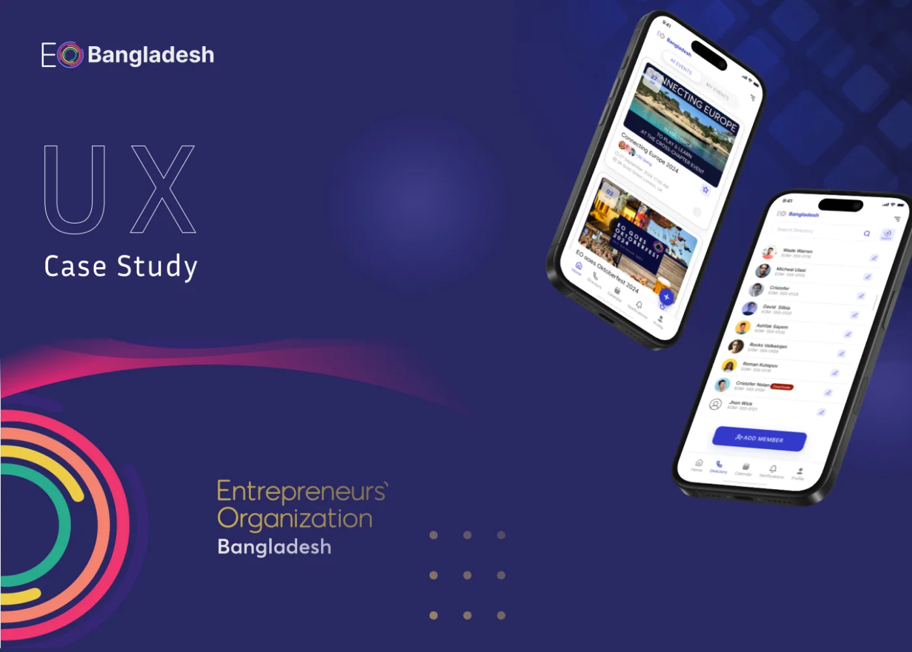
01The problem
Entrepreneurs in Bangladesh struggle to reach a reliable network for mentorship, collaboration and business growth. Many lack the chance to connect with like-minded people, learn from experienced professionals and share resources — a gap that limits their ability to innovate, scale and stay competitive in a market that moves quickly.
The EO Bangladesh app was to be the chapter's digital platform: a central hub where members reach its resources, network with each other and manage their EO activities.
The possible solution, as the brief set it out:
- Networking opportunities — connections between entrepreneurs through exclusive events, workshops and peer forums.
- Access to mentorship — programmes with experienced business leaders to guide members through challenges.
- Skill development — training sessions, webinars and knowledge-sharing to keep members current on global trends.
- Global collaboration — EO's global network, used for international partnerships and exposure.
- Community support — a community that builds trust and collaboration between members.
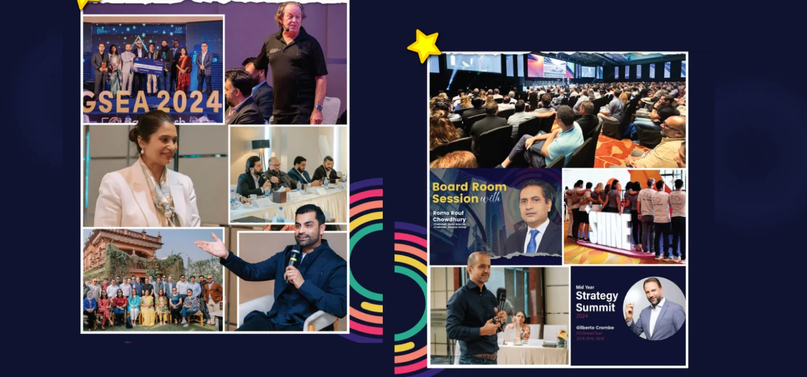
02Who it is for
Five audiences: entrepreneurs and business owners, business professionals, investors and partners, corporate networks and communities — and the EO officers who run the chapter.
The chapter itself, at the time of the research: 58 members across fourteen industries, from apparel and pharmaceuticals to real estate, construction and tobacco.

03Two people, two jobs
Interviews ran with both sides of the chapter — the EO officers who run its office, and the members who come to its events — with a separate set of questions for each.
For EO officers
- Can you walk us through your professional journey and how it has prepared you for this role?
- Tell us about a time when you managed multiple responsibilities successfully.
- How do you prioritise tasks when faced with tight deadlines and conflicting priorities?
- What tools or software have you used for managing office operations, and how proficient are you with them?
- Describe your process for planning and organising events or meetings.
- Can you share an example of a challenging situation at work and how you resolved it?
- How do you handle unforeseen issues or disruptions in your workflow?
- What steps do you take to improve processes and increase efficiency in the office?
For EO members
- How has being part of EO benefited your professional or personal life?
- What specific EO resources or programmes have had the most significant impact on your journey?
- Are there any ongoing challenges you are tackling in your business or personal growth? How is EO supporting you in these areas?
- Have you collaborated with other EO members? If so, how did it impact your business or perspective?
- What role do you think EO will play in helping you achieve your long-term goals?
- If you could mentor a new EO member, what advice would you give them about making the most of their experience?
Each side became a persona.
-
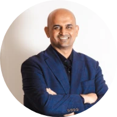
MemberMike Kazi
- Calm
- Thinker
- Creative
A prominent entrepreneur in Bangladesh and an influential figure in its business community. As a member of EO Bangladesh, he is known for his dedication to fostering entrepreneurship and creating opportunities for established and emerging business leaders alike.
- Goals
- Network with other entrepreneurs, thought leaders and industry experts.
- Find opportunities to invest in or collaborate with innovative businesses in Bangladesh.
- Frustrations
- Balancing running a business with exploring new opportunities.
- Finding trustworthy, like-minded entrepreneurs to collaborate with.
- A lack of reliable data and insight on emerging industries in Bangladesh.
- Needs
- A platform to connect with credible entrepreneurs and startups.
- Chances to learn from experienced professionals and share his own insight.
- Regular events, workshops and forums to exchange ideas and explore partnerships.
- Resources like market reports, expert opinion and mentoring programmes, to make informed decisions.
- Motivations
- Expand his influence and portfolio by finding innovative, profitable ventures.
- Build meaningful relationships with entrepreneurs and industry leaders, to share knowledge and resources.
- Explore cross-border ventures through EO's international network, for global exposure and growth.
-
EO admin
Farhana Afrin
- Organiser
- Thinker
- Leader
An MBA graduate who thrives as EO admin and office manager. With a passion for organisation and efficiency, she manages the detail of office operations and keeps everything running smoothly; a strategic mindset, built through study and work, lets her take on challenges with poise.
- Goals
- Maintain and improve smooth office operations.
- Build a reputation as a reliable, efficient administrator.
- Foster a supportive, positive work environment.
- Frustrations
- High expectations with too few tools, too little time or support.
- Outdated or poorly integrated tools and processes that slow work down.
- Misalignment between teams, or unclear direction from leadership.
- Needs
- Efficient office management software and automation tools.
- A work culture that recognises and rewards her contribution.
- Professional development to refine her skills and keep up with trends.
- Transparent goals, aligned across every level of the organisation.
- Motivations
- The satisfaction of finishing tasks and seeing tangible results.
- Recognition for her hard work and leadership.
- Contributing to a well-organised, thriving office.
- Continuously growing her knowledge and expertise.
The process
Twelve weeks: eight on the experience, four on the interface and testing.
-
Empathize
Research strategy, interviews with members and EO officers, and a user journey map.
-
Define
Problem and goal statements, and a persona for each group.
-
Ideate
Competitive analysis, task flows, user flows and the information architecture.
-
Design
Paper wireframes, a style guide, then visual design and prototyping.
-
Test
Usability testing on a phone, for simplicity and function.
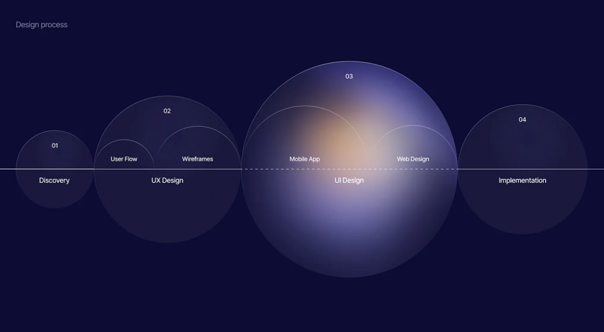
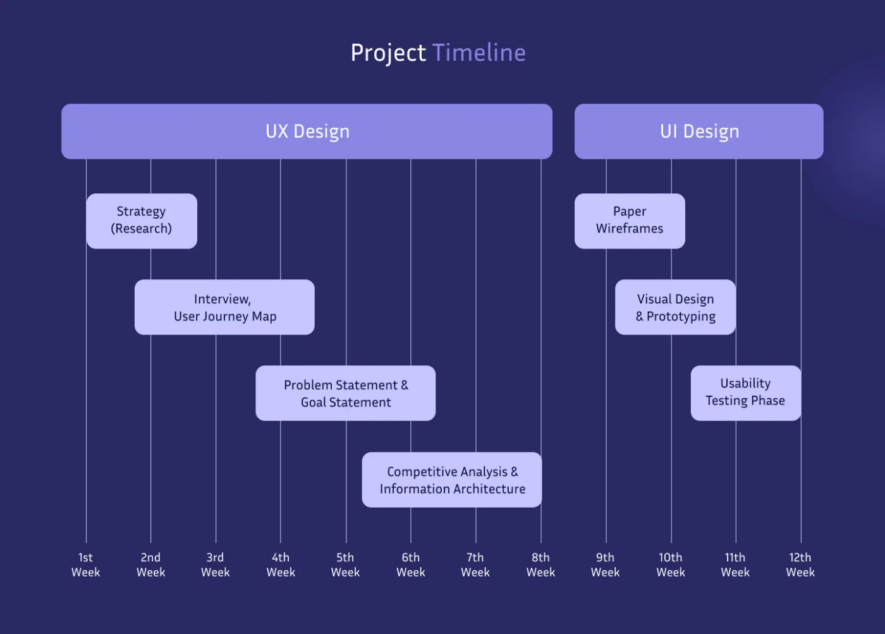
04Built for the admin too
Every task flow is an admin adding something — a member, an event, an alliance, a governance document — and each is six steps from opening the app. A directory, a calendar and a list of partners are only as useful as the person keeping them current.
Adding members has a second path: import a file instead of typing each profile in. The high-fidelity screens carry it through, with an import-from-device dialog, a sample file to follow and a spreadsheet upload step.
Two user flows go a level deeper. Forgot password checks the email, then the verification code, then the new password — with an error at each check — before confirming the reset and returning the member to sign-in. Creating an event takes the details, sets who it is for by user type, and ends in either an error or the new event.
The information architecture starts with one question — have an account? A no goes to the chapter's admin; a yes goes to sign-in, then home, which branches into the sidebar, the tab bar, alliances, events and the member's own profile.
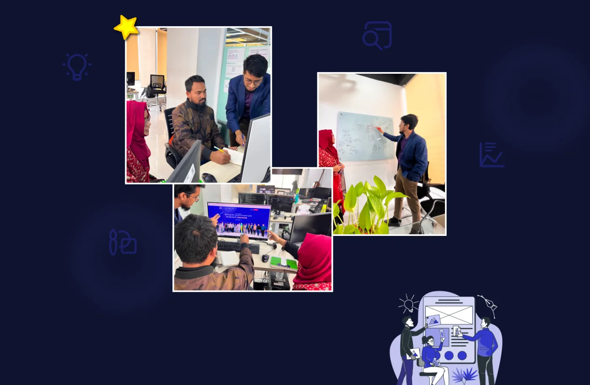
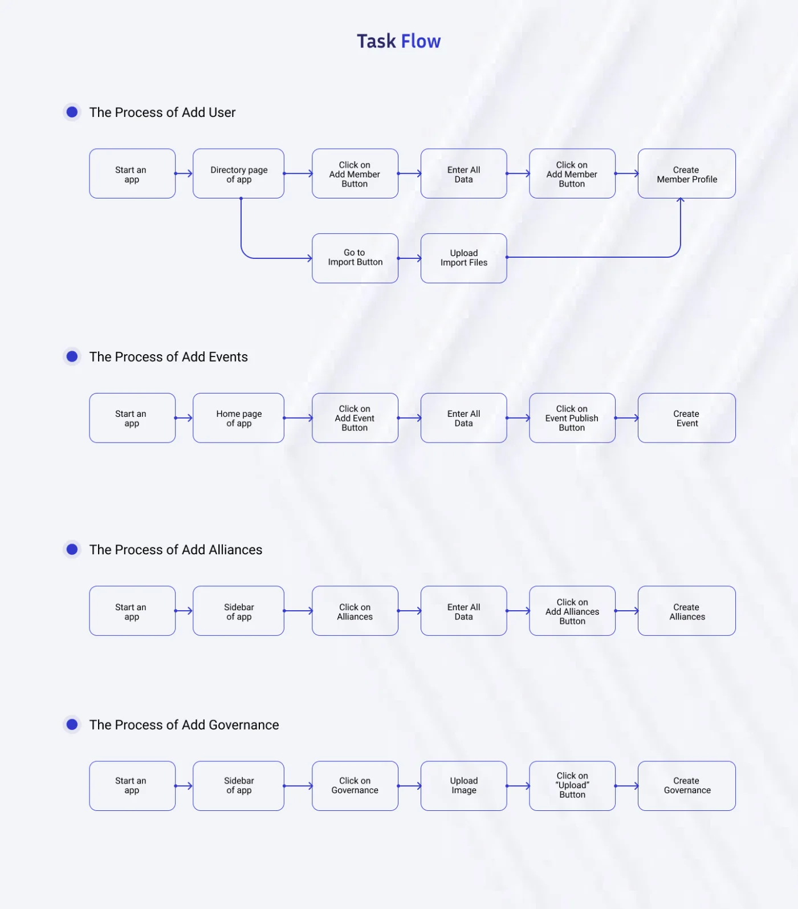
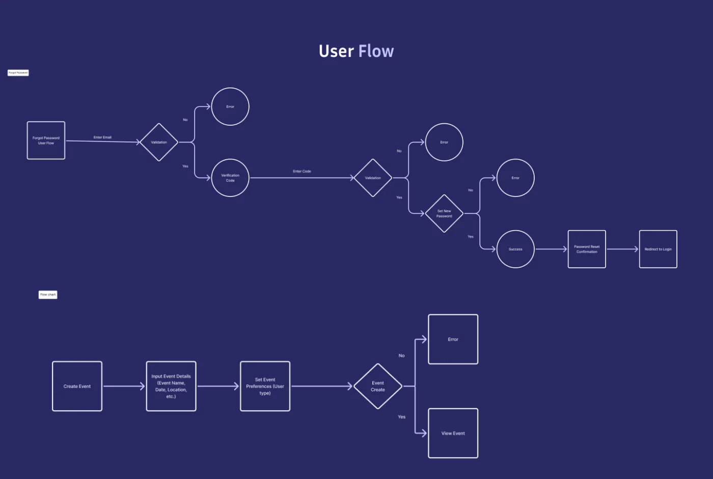
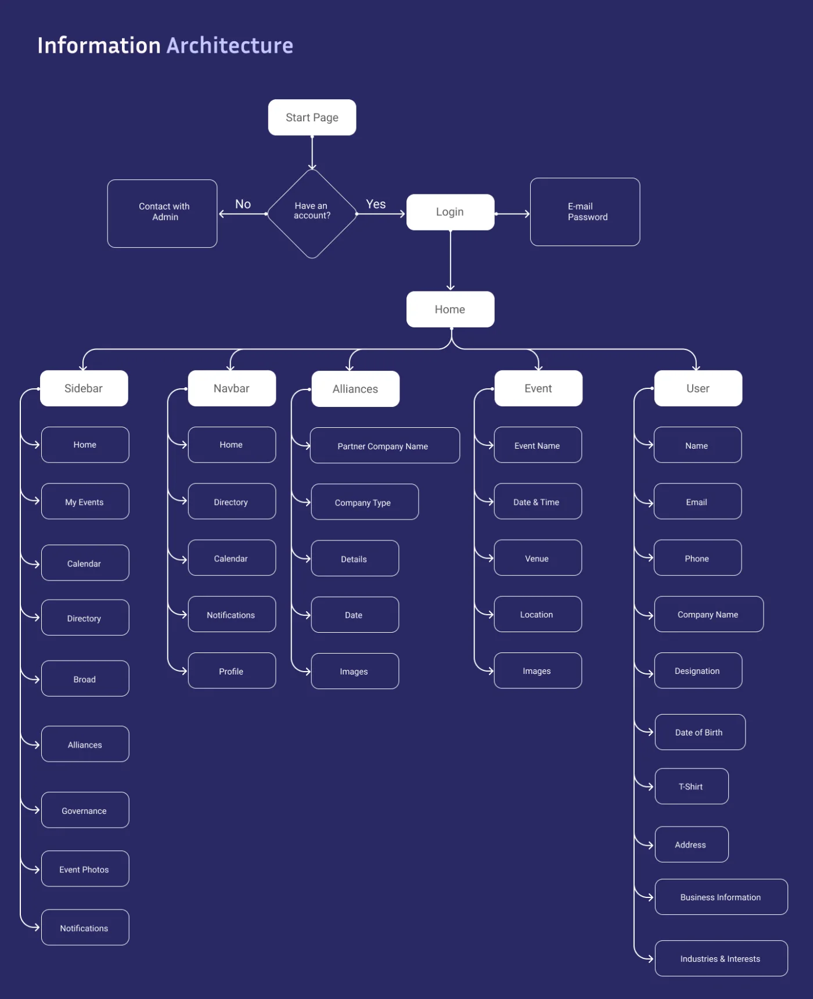
05The system
Sixty-five-plus screens went down on paper before any of them were drawn properly — sign-in, the events feed, event details, adding an event, creating an account.
The visual system is deliberately small: Inter in four weights, one
brand blue — #3239CB — with white as the
secondary colour, each with its own shades and tints, and icons in
matching outline and bold sets.
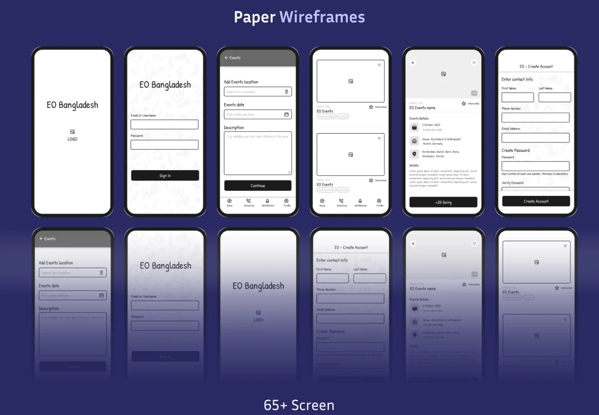
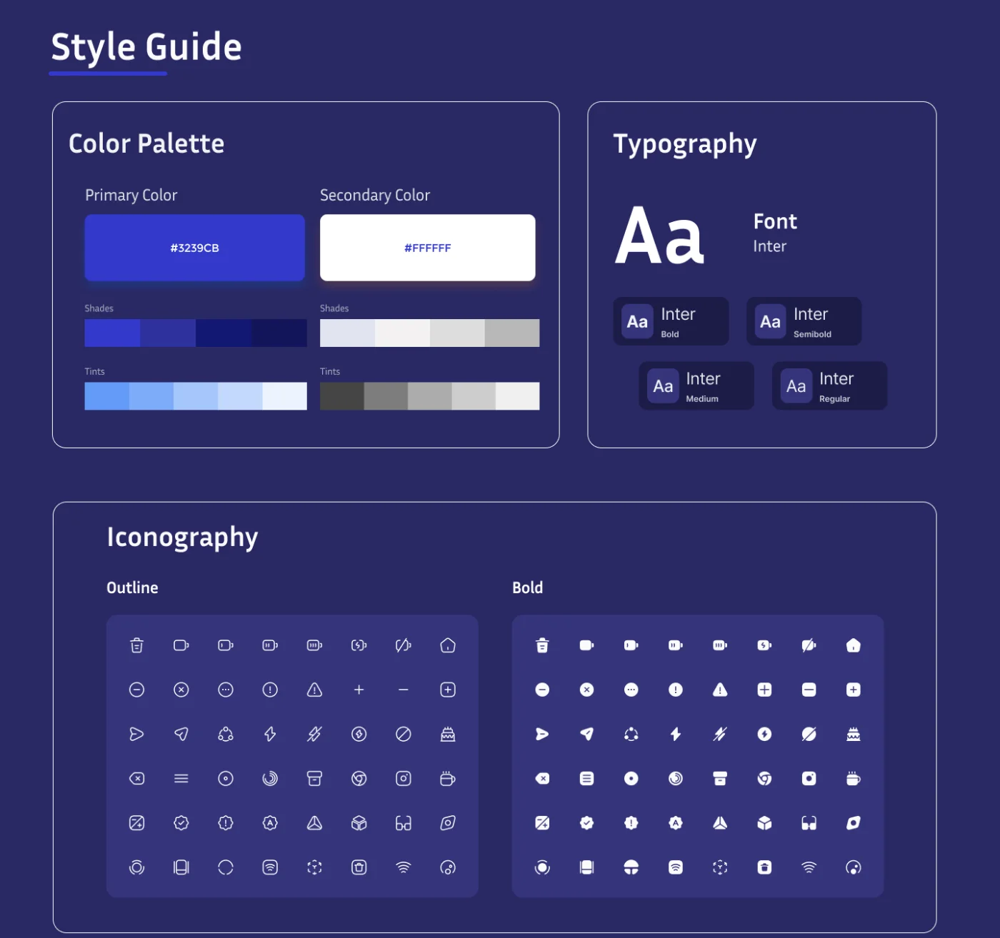
06The app
Home is the events feed. A switch at the top moves between all of the chapter's events and a member's own; each card leads with the date, then who is going and where. An add-event button sits over the feed, and five tabs cover the rest: Home, Directory, Calendar, Notifications and Profile.
An event's page carries the date and time, the venue, the cities it connects and who is going, above the full description. Around it: the member directory, the board member list, profiles and editing, company alliances, notifications, and the empty and loading states — more than two hundred screens in all.
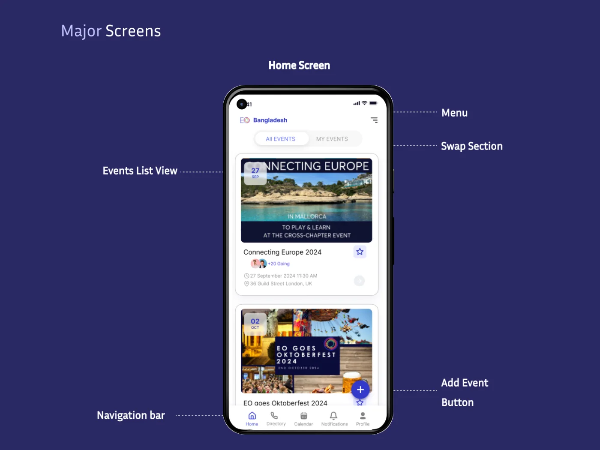
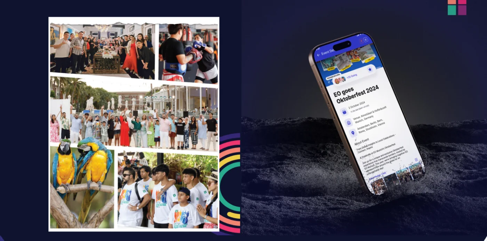
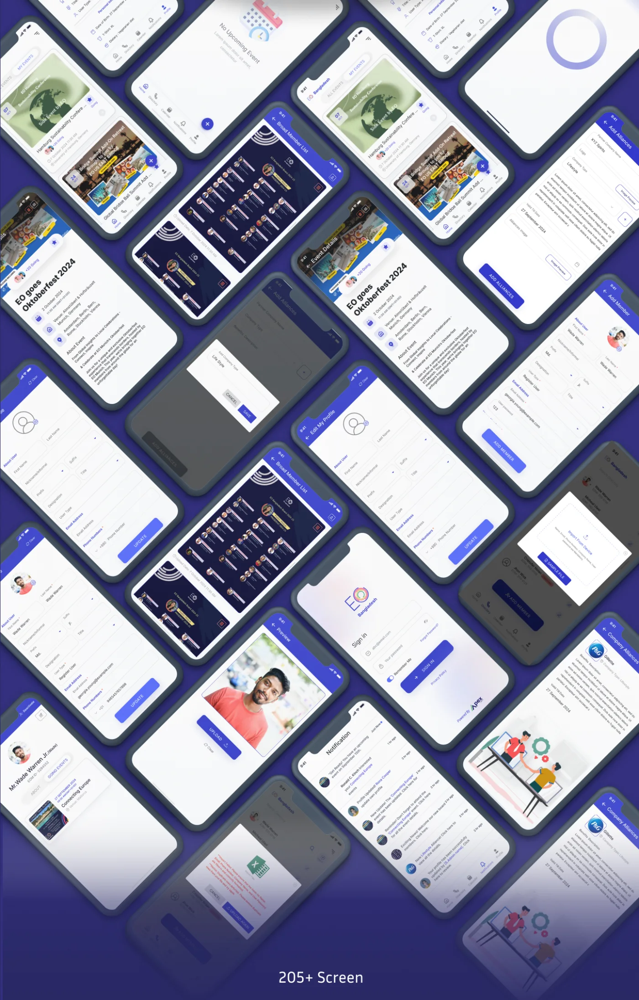
07Testing
The last two weeks went to usability testing, on phones, with the aim the board states plainly: to make sure the app is simple to use and that it works.
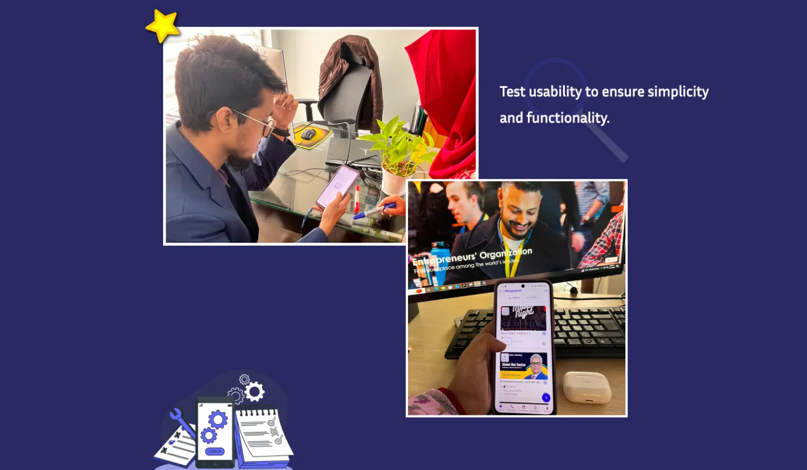
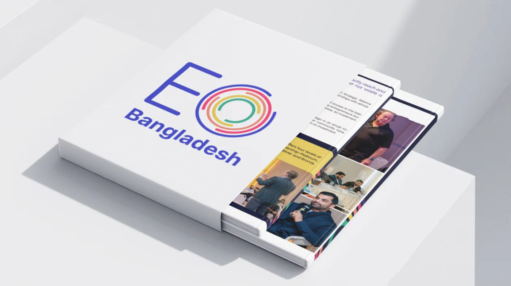
08The team
Two designers at Apex DMIT, for EO Bangladesh: Md Tanvir Hossain as product designer, and me on UX research and UX and UI design. Published on Behance.
Questions about this project: samira0151521@gmail.com
-
Md Tanvir Hossain
Product Designer
-
Samira Binte Hamid
UI/UX Designer
Apex Protinidhi app
A Bengali-first app for property field agents — leads, voice notes and earnings in one place.
Say hello
Happy to walk through this project, or any of the others, on a call.